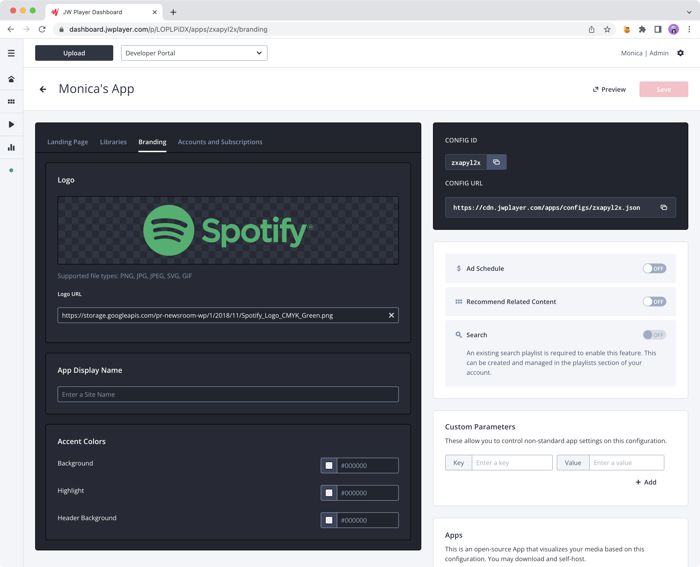
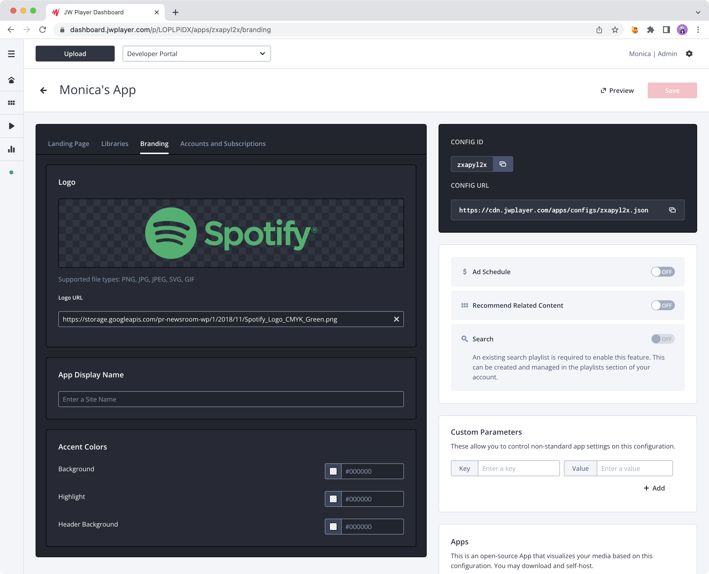

Draggable List Component

Example user flows in our Enterprise dashboard for manually curating playlists and series.
Image Input Component
Example user flows for adding logos to OTT Apps and web players.
Our design system, like many, is rooted in the methodology and principles of atomic design. Below is a glimpse at how we scaled our foundational UI components into robust reusable components that could support multiple use cases.
Example user flows in our Enterprise dashboard for manually curating playlists and series.
Example user flows for adding logos to OTT Apps and web players.
